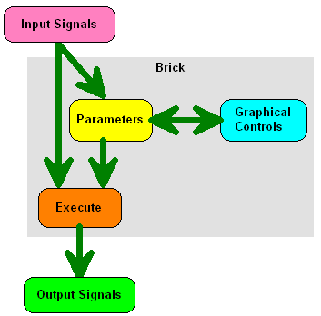
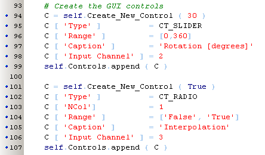

PyLab Works  Bricks Library ( march 2008 )
Bricks Library ( march 2008 )
Application Designer / Domain Expert / Control Designer / Core Developer
Introduction
We have chosen for a human indexing, so all indices start at 1 (whereas Python normally starts at 0).
For the descriptions below, we've used the Rotate Brick from the Image Library.

Creating New Brick
The easiest way to create a new brick is to start with the template "Brick Template", correct the Inputs, Outputs and Controls. In this template, only the "After_Init" method is used and the "Generate_Output_Signals" is replaced by a dummy, that will print all available variables when the method is called. In this way, you can use the Brick in an application, connect it to other Bricks, see the visual presentation and test the user interface including most events.
The standard doc-string of Python is not used, instead we use the property Description, that is because doc-string can not be used in the multi-language support.
When the above part works, remove the dummy "Generate_Output_Signals" and replace by a real implementation:
Internationalization & Localization
If we want to make this program available for many different users, localization is an important issue. I looked at IL8N / IL10N, which seems to be the de-facto standard, but found it much too complex, especially very difficult to incorporate the system with an inplace editor. Therefor we use for the time being a much simpler (but less complete) translation model.
Library files
Library files are stored in the subdirectory "bricks\" and each library file should start with "brick_".
If you start a new library file, be sure to give it the right name with the right upper/lower-case, because it's difficult to change e.g. letter-case afterwards (at least under windows).
The easiest way to start a new library is to make a copy of an existing library. The library "brick-Image_Processing.py" is a good example, it contains an only-output brick (t_Read), and only-input brick (t-Show) and a brick with both input and output and parameters (controls) interfering with some of the inputs (t_Rotate).
Special tricks
A control can claim a field in the statusbar.
Brick Definition / Description
Brick Inputs
Brick Outputs
Brick Edit-Shape
Brick Controls / Parameters

Brick Generate Output Signals
This function calculates the new outputs on the base of changed inputs and / or changed parameters. If the brick doesn't generate output signals, no execute function is required. The ancestor of brick will check if input values and or parameters were changed and will decide if the execute function should be called or not.
Using Bricks from other libraries
Suppose you've an Audio library, that has a brick with a good working wav-file player, and now you want to design a Media-library. In that case you don't want to copy the functionality already available, but just want to add a name to the Media Library. The user will see the wav-player in the media library, even if the Audio Library is not visible to the user. The implementation is simply: